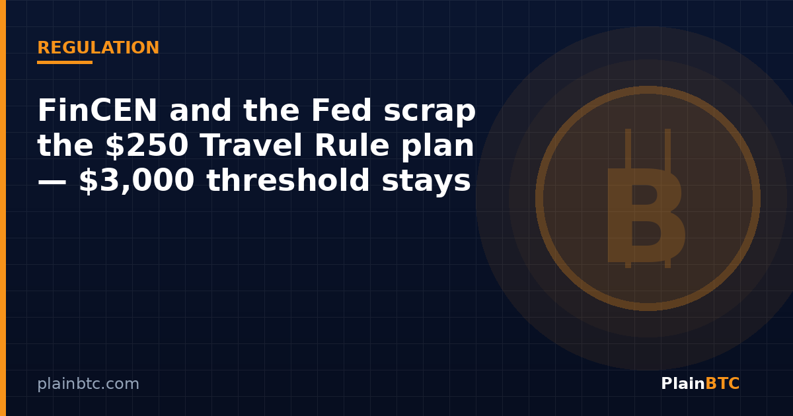

FinCEN and the Fed scrap the $250 Travel Rule plan—$3,000 threshold stays

On Monday, Nov. 9, 2026, the Financial Crimes Enforcement Network (FinCEN) and the Federal Reserve Board formally withdrew a joint 2020 proposal that would have lowered the Bank Secrecy Act threshold for many cross-border funds transfers from $3,000 to $250. The notice was published in the Federal Register and states that the agencies “will not take further action” on that notice of proposed rulemaking.
For everyday U.S. readers, the practical headline is simple: the long-standing $3,000 recordkeeping and Travel Rule line remains in place for now. Nothing in Monday’s filing repeals existing rules. What disappears is the specific path to a $250 threshold—and proposed language that would have written convertible virtual currency more explicitly into the definition of “money” for those rules.

Key takeaways
- FinCEN and the Fed withdrew their Oct. 27, 2020 NPRM as of Nov. 9, 2026.
- The proposal would have cut certain cross-border thresholds from $3,000 to $250.
- It also sought to clarify that the rules cover convertible virtual currency and some digital assets with legal-tender status.
- The existing $3,000 threshold stays; the agencies committed to fresh public comment before any similar rewrite.
What the 2020 proposal would have done
Under today’s Bank Secrecy Act framework, banks and many nonbank financial institutions must collect, retain, and—in Travel Rule cases—transmit identifying information on funds transfers and transmittals of funds at or above $3,000 when those transfers begin or end outside the United States. The 2020 NPRM aimed to cut that threshold to $250 for covered cross-border activity and to clarify that “money” includes convertible virtual currency (CVC) and digital assets that have legal tender status for a recipient.
Privacy and crypto advocacy groups had long opposed the lower dollar line, arguing it would pull ordinary remittances and smaller transfers into heavier surveillance machinery. Banking and money-services commenters also warned about compliance costs. According to Bitcoin Magazine’s summary of the withdrawal notice, the agencies received nearly 3,000 comments, many of them similar form letters opposing the cut.

Why regulators backed off now
The Federal Register notice gives two main reasons. First, more than five years have passed since the proposal, and the agencies want additional public feedback before adopting anything similar—so the withdrawal gives the public certainty that no final rule will issue without another comment period. Second, crypto markets and legal frameworks have changed. The notice cites the GENIUS Act stablecoin law, enacted July 18, 2025, as an example of new frameworks that any future Travel Rule rewrite related to CVC should account for so amendments are “fit for purpose.”
Monday’s move also fits a recent pattern of Treasury reversals. The Block reported that FinCEN previously rescinded its 2020 “unhosted wallet” proposal and a 2023 plan to label international crypto mixing a primary money-laundering concern. Withdrawal of a proposal is not the same as softer enforcement: separate tools can still target specific platforms. Bitcoin Magazine noted that FinCEN recently restricted the MEXC exchange from the U.S. financial system over alleged sanctions evasion.
What this does—and does not—change for crypto users
If you send or receive bitcoin or dollar stablecoins through a U.S. exchange or other covered institution, Monday’s notice does not suddenly loosen know-your-customer checks, sanctions screening, or existing Travel Rule practice. Those obligations still apply under current rules and guidance. What it removes is the nearer-term risk that a finalized $250 cross-border threshold—and the proposed crypto wording in that package—would have taken effect without a fresh rulemaking.
For people who prefer a regulated U.S. exchange account rather than unsupervised peer-to-peer rails, platforms such as Coinbase remain subject to BSA/AML programs regardless of this withdrawal. The policy fight now shifts to whether FinCEN and the Fed write a new proposal that reflects stablecoin legislation, industry messaging standards, and remittance realities—or leave the $3,000 line alone for longer.
What to watch next
- Any new NPRM from FinCEN or the Fed revisiting Travel Rule thresholds or crypto definitions.
- Stablecoin AML and customer-identification proposals tied to the GENIUS Act implementation timeline.
- Case-by-case enforcement actions against named platforms, which can continue even when broad proposals are withdrawn.
- How banks and exchanges update compliance manuals after Monday’s certainty that the 2020 package will not be finalized as written.
New to crypto? Our beginner guide to buying bitcoin on Coinbase.
Looking for a regulated U.S. on-ramp?
If you want to buy bitcoin or hold crypto through a U.S. exchange with identity checks, you can create a Coinbase account with our referral link. Eligible new users may receive a bonus after a qualifying trade; terms vary by country and can change.
Sign up on Coinbase with this linkNot financial advice. This article is for informational and educational purposes only. It is not investment, trading, legal, or tax advice. Cryptocurrency is volatile and you can lose money. Do your own research and consider speaking with a qualified professional before making financial decisions.